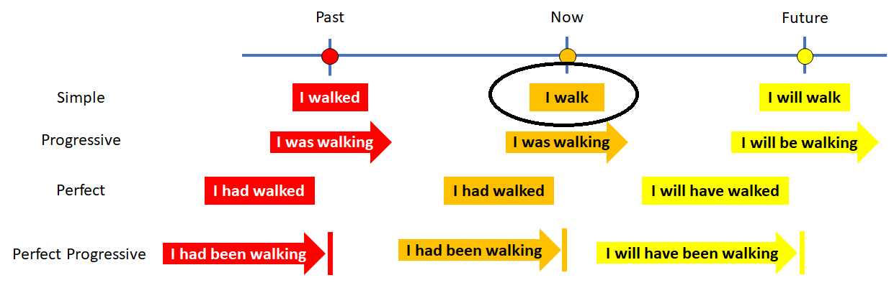

Spanish verbs are the most complicated part of the language. Most English verbs are very similar. I do, you do. We do, they do. The same works in spanish would be hago, haces, hacimos, hacen. English words are nearly identical, but the Spanish look like completely different things.Still there are rules and many verbs follow the same rules. About 95% of the "AR" verbs follow the regular rules. 67% of "IR" verbs are regular. Only 28% of the "ER" verbs are regular. But ER and IR verbs are rare. If you learn these rules, they will work for 84% of all Spanish verbs.

These classes are not going to make your whole day a quest to properly conjugate a verb. It makes for very dull learning, BUT if you don't learn how to conjugate verbs you will suck at Spanish and no one will understand you. It were been like if you does talked this way. No good. So we will introduce just few Spanish verbs and we will introduce a few nouns to use with them. For now, we are going to work only with el presente--the present tense. This is the Spanish equivalent of phrases like "She walks to the store" or "I travel around". You are doing it now--in the present.
Today's vocabulary will be related to food and drink. As in most of your classes, there are three verbs: one each from the -ar, -er, and -ir families. Then there are ten words for foods and drinks in the kitchen.